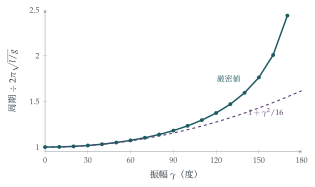

STEP III 1998、第11問
先に進む前に問題を読んでおこう。問題は STEP Support Programme の問題データベースにある： step.maths.org/questions/98-s3-q11
導入
物理を学ぶ者は誰でも、振り子の周期（period）は振れの大きさによらず \(2\pi\sqrt{l/g}\) であると教わる。ガリレオ（Galileo）はこれを信じていた。ピサ大聖堂で揺れるランプの時間を自分の脈拍で計ったのがきっかけだと伝えられている。そして、振り子時計が成り立つのもこの性質のおかげである。しかし、これは厳密には正しくない。この公式は近似 \(\sin\theta \approx \theta\) から導かれたものであり、大きな弧を描いて振れる振り子はより長い時間がかかる。\(90^\circ\) では周期は \(18\%\) 長くなり、ほぼ真上の位置から放した振り子はいくらでも長い時間をかけうる。
この問題では、まず厳密な周期を積分として求め、次にほどほどの振れに対する最初の補正を求める。この積分は初等関数では計算できない。それは楕円積分（elliptic integral）であり、こうした積分がどのように手なずけられてきたかという物語は、ガウス（Gauss）の算術幾何平均（arithmetic–geometric mean）から楕円曲線（elliptic curve）の理論にまで及ぶ。
取りかかる前に
おもりは半径 \(l\) の円周上を動く。その速さと（最下点を基準とした）高さを \(\theta\) と \(\dot\theta\) を用いて表すとどうなるか？
速さは \(l\dot\theta\) であり、最下点からの高さは \(l(1 - \cos\theta)\) である。糸は仕事をしない（その張力（tension）はつねに運動の方向に垂直である）ので、エネルギーは保存される（エネルギー保存則（conservation of energy））。
順を追って解く
段階 1 エネルギー
最大の角度 \(\gamma\) において、おもりは一瞬静止する。エネルギー保存則より \[\tfrac12ml^2\dot\theta^2 + mgl(1 - \cos\theta) = mgl(1 - \cos\gamma),\] が成り立ち、両辺を \(ml\) で割ると \(\frac12l\dot\theta^2 = g(\cos\theta - \cos\gamma)\) を得る。■
段階 2 積分としての周期
\(\cos\theta - \cos\gamma\) を半角（half-angle）を用いて表すにはどうすればよいか？ また、\(\theta = 0\) から \(\theta = \gamma\) まで進むのに周期のどれだけの部分が費やされるか？
\(\cos\theta = 1 - 2\sin^2\frac\theta2\) を用いると \(\cos\theta - \cos\gamma = 2\bigl(\sin^2\frac\gamma2 - \sin^2\frac\theta2\bigr)\) となるので、 \[\dot\theta = 2\sqrt{\frac gl}\,\Bigl(\sin^2\frac\gamma2 - \sin^2\frac\theta2\Bigr)^{1/2}.\] 対称性より、\(0\) から \(\gamma\) までの振れには周期の4分の1の時間がかかるので、 \[P = 4\int_0^\gamma\frac{\mathrm{d}\theta}{\dot\theta} = 2\sqrt{\frac lg}\int_0^\gamma\Bigl(\sin^2\frac\gamma2 - \sin^2\frac\theta2\Bigr)^{-1/2}\mathrm{d}\theta. \qed\]
段階 3 特異点を取り除く
被積分関数（integrand）は \(\theta = \gamma\) で無限大になる。\(k = \sin\frac\gamma2\) とおき、\(\sin\frac\theta2 = k\sin\phi\) と置換する。\(0 \leq \theta \leq \gamma\) に対応する \(\phi\) の範囲は何か？ 被積分関数はどうなるか？
\(\theta\) が \(0\) から \(\gamma\) まで動くとき、\(\phi\) は \(0\) から \(\frac\pi2\) まで動く。微分すると \(\frac12\cos\frac\theta2\,\mathrm{d}\theta = k\cos\phi\,\mathrm{d}\phi\) となるので、 \[\mathrm{d}\theta = \frac{2k\cos\phi\,\mathrm{d}\phi}{\cos\frac\theta2} = \frac{2k\cos\phi\,\mathrm{d}\phi}{\sqrt{1 - k^2\sin^2\phi}}.\] 一方、\(\sin^2\frac\gamma2 - \sin^2\frac\theta2 = k^2(1 - \sin^2\phi) = k^2\cos^2\phi\) である。厄介な因子は約分されて消える： \[P = 2\sqrt{\frac lg}\int_0^{\pi/2}\frac{1}{k\cos\phi}\cdot\frac{2k\cos\phi}{\sqrt{1 - k^2\sin^2\phi}}\,\mathrm{d}\phi = 4\sqrt{\frac lg}\int_0^{\pi/2}\frac{\mathrm{d}\phi}{\sqrt{1 - k^2\sin^2\phi}}.\] \(k < 1\) であるから、新しい被積分関数はまったく問題なく振る舞う。これで特異点（singularity）が取り除かれた。
段階 4 最初の補正
\(k\) が小さいとき、\((1 - k^2\sin^2\phi)^{-1/2}\) を二項定理（binomial theorem）で展開せよ。\(\int_0^{\pi/2}\sin^2\phi\,\mathrm{d}\phi\) の値はいくらか？
1次の近似で \((1 - k^2\sin^2\phi)^{-1/2} \approx 1 + \frac12k^2\sin^2\phi\) であり、\(\int_0^{\pi/2}\sin^2\phi\,\mathrm{d}\phi = \frac\pi4\) である。よって \[P \approx 4\sqrt{\frac lg}\Bigl(\frac\pi2 + \frac{k^2}{2}\cdot\frac\pi4\Bigr) = 2\pi\sqrt{\frac lg}\Bigl(1 + \frac{k^2}{4}\Bigr).\] \(\gamma\) が小さいとき \(k = \sin\frac\gamma2 \approx \frac\gamma2\) であるから、\(k^2 \approx \frac{\gamma^2}{4}\) となり、 \[P \approx 2\pi\sqrt{\frac lg}\Bigl(1 + \frac{\gamma^2}{16}\Bigr). \qed\] \(20^\circ\) の振れ（\(\gamma \approx 0.35\)）では補正は \(1\%\) 未満であり、\(60^\circ\) では約 \(7\%\) である（図 11.3.1）。

振り返り
エネルギーから第一積分が得られる。 2階の方程式が1階の方程式になり、周期は積分として表された（第一積分（first integral））。
置換によって特異点を手なずける。 被積分関数は折り返し点で発散したが、置換 \(\sin\frac\theta2 = k\sin\phi\) によってこの問題が取り除かれた。
まず厳密に、それから近似する。 厳密な公式を求めてから展開した。こうすることで、近似がどれほどよいかもわかる。
背後にある数学
楕円積分
積分 \[K(k) = \int_0^{\pi/2}\frac{\mathrm{d}\phi}{\sqrt{1 - k^2\sin^2\phi}}\] は第一種完全楕円積分（complete elliptic integral of the first kind）とよばれる。この名は、これと近い関係にある積分が楕円の周の長さを与えることに由来する。厳密な周期は \(P = 4\sqrt{l/g}\,K\bigl(\sin\frac\gamma2\bigr)\) である。被積分関数を完全に展開し、第 4.4 節 のウォリス（Wallis）積分 \(\int_0^{\pi/2}\sin^{2n}\phi\,\mathrm{d}\phi\) を用いて項別に積分すると、 \[P = 2\pi\sqrt{\frac lg}\Bigl(1 + \bigl(\tfrac12\bigr)^2k^2 + \bigl(\tfrac{1\cdot3}{2\cdot4}\bigr)^2k^4 + \bigl(\tfrac{1\cdot3\cdot5}{2\cdot4\cdot6}\bigr)^2k^6 + \cdots\Bigr).\] を得る。なじみのある関数を有限回組み合わせても \(K(k)\) は得られない。これは真に新しい関数なのである。
ガウスの驚くべき公式
\(K\) を計算するには、はるかによい方法がある。第 2.6 節 では算術幾何平均を学んだ。\(a\) と \(b\) から始めて、それらを相加平均と相乗平均で置き換えることを繰り返すのであった。ガウスは1799年に \[K(k) = \frac{\pi}{2\,\mathrm{AGM}\bigl(1, \sqrt{1 - k^2}\bigr)},\] であることを発見した。したがって、振幅 \(\gamma\) の振り子の周期は厳密に \[P = \frac{2\pi\sqrt{l/g}}{\mathrm{AGM}\bigl(1, \cos\frac\gamma2\bigr)}.\] となる。AGM は非常に速く収束するので、約 \(160^\circ\) までの振れであれば、3〜4ステップで周期が有効数字10桁まで得られる。図 11.3.1 の値もこの方法で計算したものである。\(180^\circ\) に近づくと2つの初期値 \(1\) と \(\cos\frac\gamma2\) は大きく離れるため、もう1〜2ステップ余分にかかるが、\(179^\circ\) でも5ステップで十分である。ガウスは日記に、この発見は「解析学のまったく新しい分野を開く」と記しており、それは正しかった。楕円積分の逆関数を考えることで、アーベル（Abel）とヤコビ（Jacobi）は楕円関数（elliptic function）に到達し、楕円関数はさらに楕円曲線へとつながった。楕円曲線は今日、数論（number theory）の中心にあり（フェルマーの最終定理（Fermat’s Last Theorem）の証明の鍵であった）、またインターネットの安全を守る暗号（cryptography）の中心にもある。
振り子の周期は振幅によらないというガリレオの主張は1602年ごろになされたもので、彼が調べた小さな振れについてはよい近似であった。ホイヘンス（Huygens）はそれが厳密ではないことに気づき、1659年に、周期が本当に振幅によらなくなる曲線を発見した。それがサイクロイド（cycloid）であり、第 11.4 節 の主題である。1656年以降に彼が製作した振り子時計によって、時計の誤差は1日あたり約15分から約15秒にまで改善された。海上で経度を求める問題を解決したマリンクロノメーター（marine chronometer）は、のちに振り子をまったく用いなくなったが、振り子時計は1920年代まで世界で最も正確な時計であり続けた。
思考のスキル
ある量が計算できない積分で与えられているときは、それを扱いやすい形に変形し、被積分関数を展開して項別に積分せよ。
これは物理学者が理想化された結果に対する補正を求める方法であり、摂動論（perturbation theory）の出発点でもある。大学では、項別積分（term-by-term integration）が正当化されるのはどのようなときか（一様収束（uniform convergence））、また途中で打ち切ったときの誤差をどう評価するかを学ぶことになる。
次の一歩
つながれた粒子。 STEP III 2015、第9問 に挑戦せよ。これは、微小振動であっても周期が振幅に依存する振動子である。振り子の周期は依存しないのに、なぜこの振動子では依存するのか？
次の項。 二項展開をもう1項先まで進め、\(P \approx 2\pi\sqrt{\frac lg}\bigl(1 + \frac{\gamma^2}{16} + \frac{11\gamma^4}{3072}\bigr)\) であることを示せ。
手計算による AGM。 AGM を3ステップ用いて振幅 \(90^\circ\) の振り子の周期を見積もり、図中の値 \(1.1803\) と比較せよ。
時計。 ある振り子時計は、振幅 \(4^\circ\) で正確に時を刻むよう調整されている。振幅が \(5^\circ\) に増えると、1日に何秒遅れるか？
さらに学ぶために
David Morin, Introduction to Classical Mechanics (Cambridge University Press)（古典力学入門）。第4章で大振幅の振り子を扱っている。
Jonathan Borwein & Peter Borwein, Pi and the AGM (Wiley)（円周率と算術幾何平均）。ガウスの発見とその応用を扱い、\(\pi\) を計算する最速の方法も紹介している。
Dava Sobel, Longitude (Fourth Estate)（経度）。振り子のその先にある、海上での時間計測の物語である。